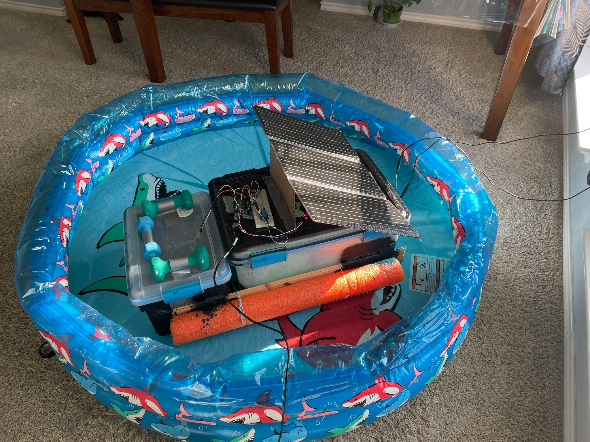
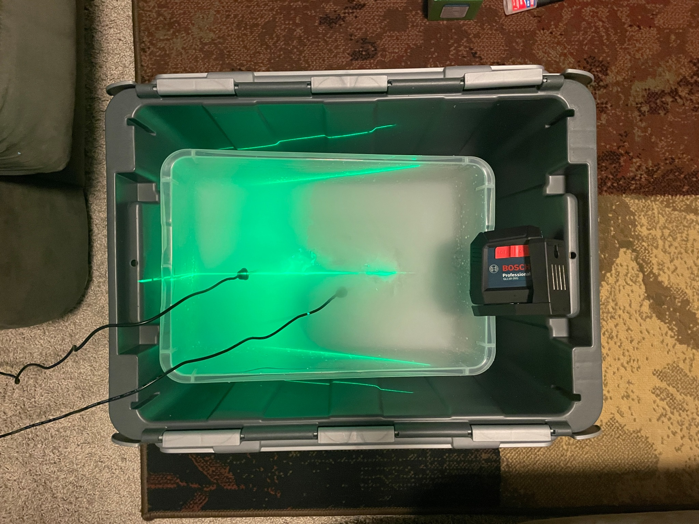
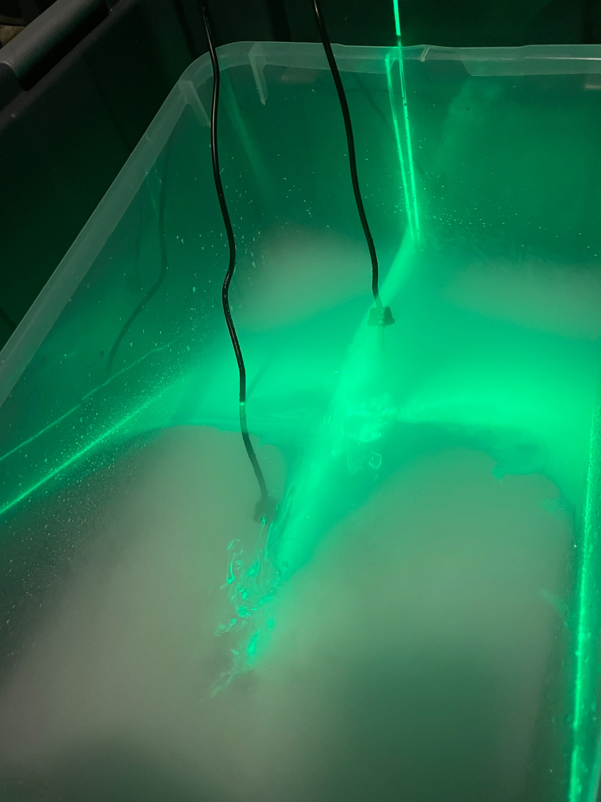
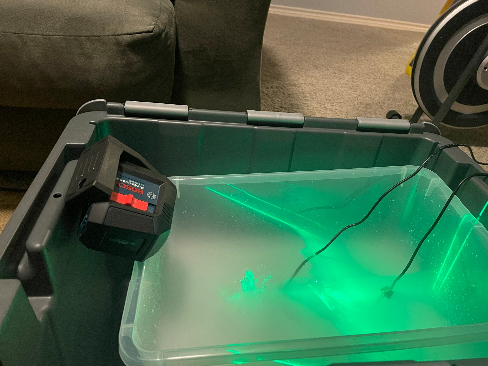
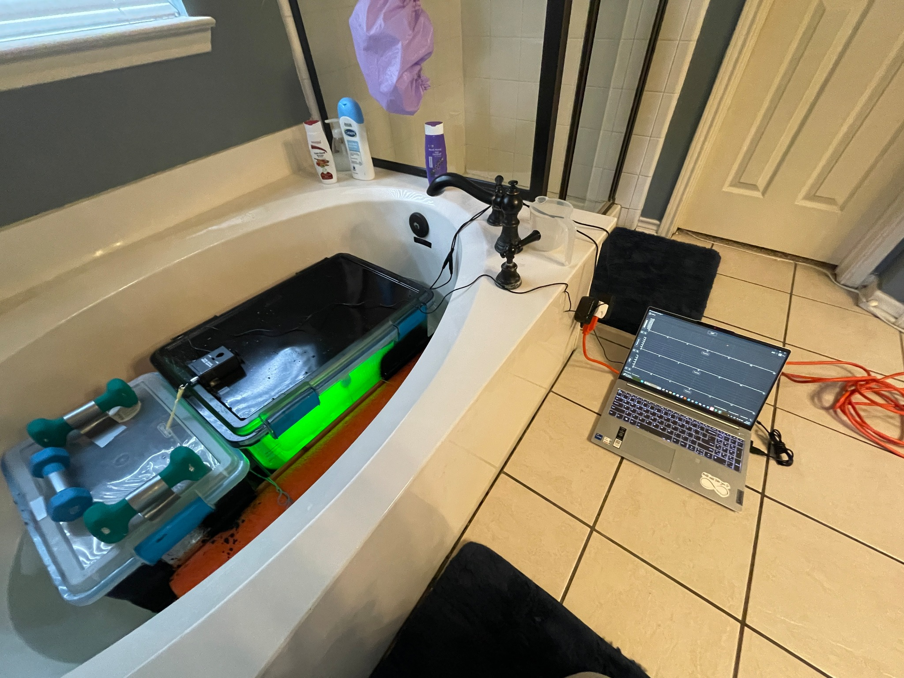
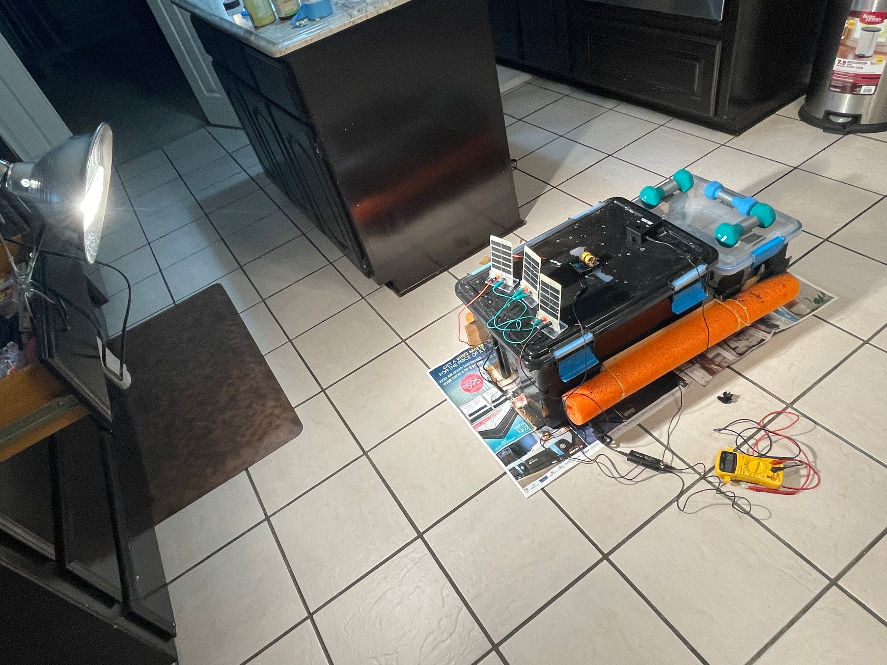
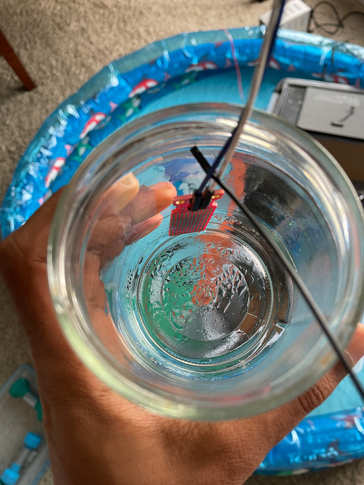
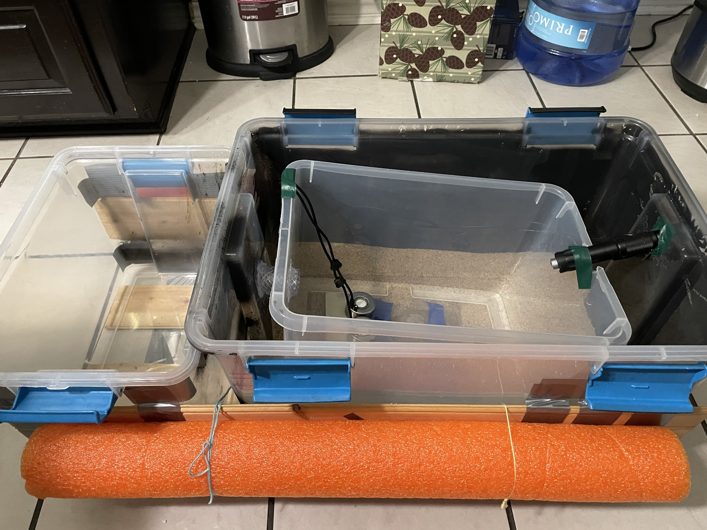

The Water Guardian
Solar-powered water-purification raft exploring water atomization and the photomolecular effect. Powered by a 30 W solar panel and UPS-backed battery.
The raft uses solar-powered distillation to separate water from dissolved salts through evaporation and condensation. The experiments explore water atomization and the photomolecular effect as ways to increase evaporation.







